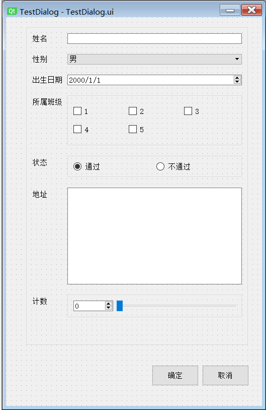

Qt 系列（六）——表单
前言
出个差出的状态都没了，每次回来都得缓个一段时间，这篇主要聊下qt中表单控件的常规使用，也是个基础的玩意儿。
表单控件
常规使用的表单控件如：单行文本，多行文本，单选，多选，下拉，日期、时间选择等，在qt中对应的就是QLineEdit,QTextEdit,QRadioButton,QCheckBox,QComboBox,QDateEdit/QDateTimeEdit之类。
像下图这样搞一个demo界面，然后我们来看这一个个控件。

QLineEdit
单行文本，可以通过setText() 来设置文本内容（insert() 也可以不过没有特殊需求就不常用），text() 来获取文本内容，setPlaceholderText() 设置提示文本内容。
输入框一般对应的事件常用的就是textChanged() 。
echoMode可以设置显示模式，根据需要来设置。
| 显示 | 作用 |
|---|---|
| Normal | 普通文本，可正常显示输入内容 |
| NoEcho | 不显示输入内容，类似linux下输入密码 |
| Password | 密码文本，隐藏输入内容，用圆点代替 |
| PasswordEchoOnEdit | 也是密码文本，在输入时/聚焦时显示内容，失去焦点后显示为密码文本 |
setValidator() 用来设置输入限制，例如只能输整数/小数或者其他限制之类的，常用的验证器像内置的QIntValidator，QDoubleValidator，需要自定义的就可以用QRegExpValidator这个正则限制，通过自定义正则表达式来限制输入。
1 | |
QTextEdit
多行文本，与QLineEdit用法类似，不过这个可以支持富文本，也可以写html文本，一个**setPlainText()，另一个setHtml()，对应的获取方法toPlainText()，toHtml()**，其他的像获取光标位置，插入文本，设置字体样式等等就不多说了。
QRadioButton
单选，默认是同父级下所有的radio都是互斥，当然也可以通过QButtonGroup来设置互斥关系。
通过setChecked() 来设置默认选中/不选中，isChecked() 判断是否选中。
通过setEnabled()，setDisabled() 来设置控件可用，两个方法都可以，setEnabled(true)/，setDisabled(false)为可用，反之就是禁用。
1 | |
QCheckBox
多选，常用方法与QRadioButton类似，不多说了。
QComboBox
下拉选项，与QListView用法类似（不知道还记得QListView这个不）。
常用的事件**currentIndexChanged(int index)**。
1 | |
QDateEdit/QTimeEdit/QDateTimeEdit
时间选择控件，一个是日期，一个是日期+时间，用法基本类似。
- date/time 获取日期/时间
- minimumDate/minimumTime 最小日期/时间
- maximumDate/maximumTime 最大日期/时间
- displayFormat 日期/时间格式化
除QTimeEdit外，其余两个可通过属性setCalendarPopup(true) 设置为弹出日期选择窗口。
小结
基本上常用的控件就是这几个，当然还有一些其他的表单控件没有说到，后续用的多了就整理下再补充吧。